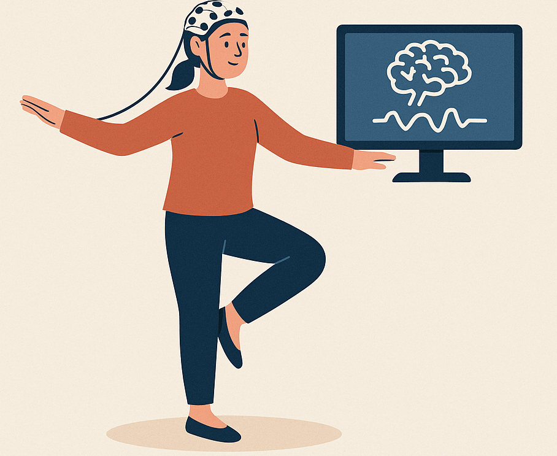

Auswirkungen des Schlafs auf das Gedächtnis - Effects of Sleep on Memory
Eine Studie, die zeigt, wie guter Schlaf dabei hilft, Langzeitgedächtnis zu bilden. A study showing how quality sleep helps form long-term memories
Eine Studie, die zeigt, wie guter Schlaf dabei hilft, Langzeitgedächtnis zu bilden. A study showing how quality sleep helps form long-term memories

Die Gehirnaktivität während der Aufrechterhaltung des Gleichgewichts messen -Measure brain activity while maintaining balance
Research on how our brain process everyday sound